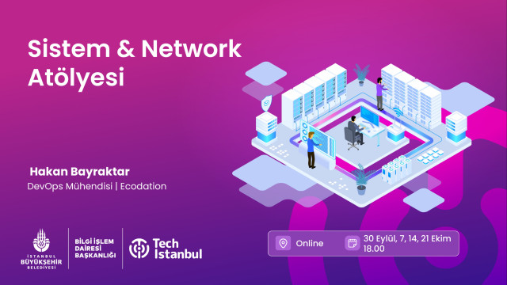
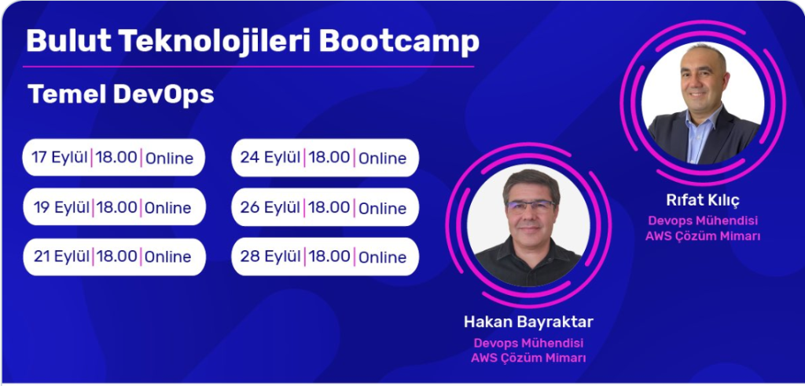
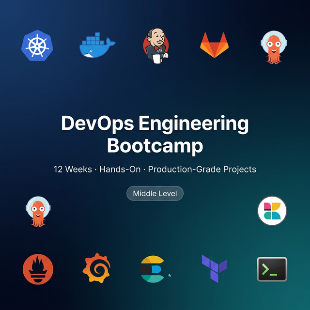
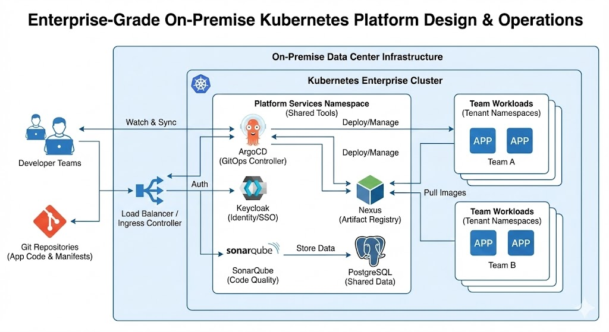
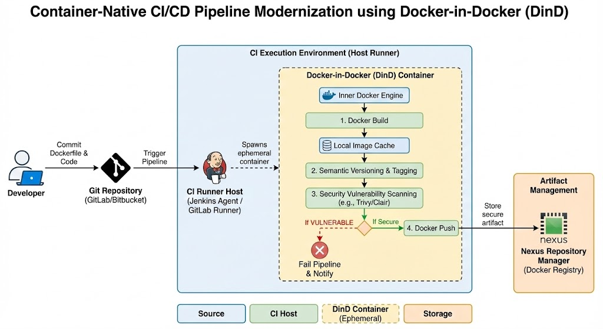
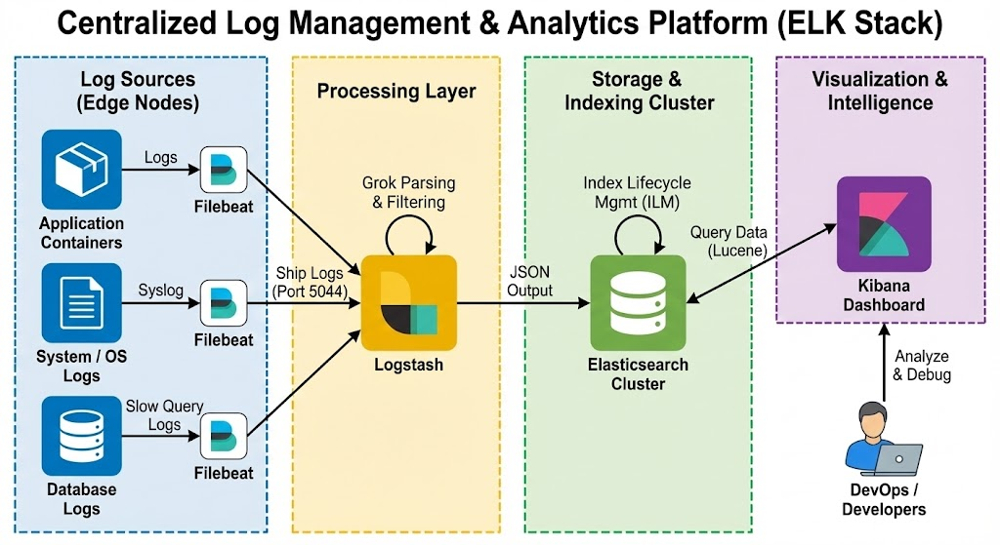
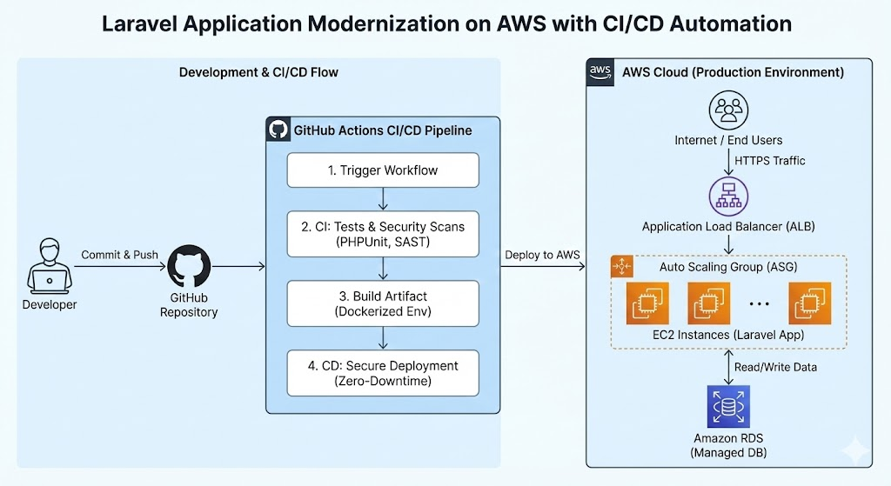
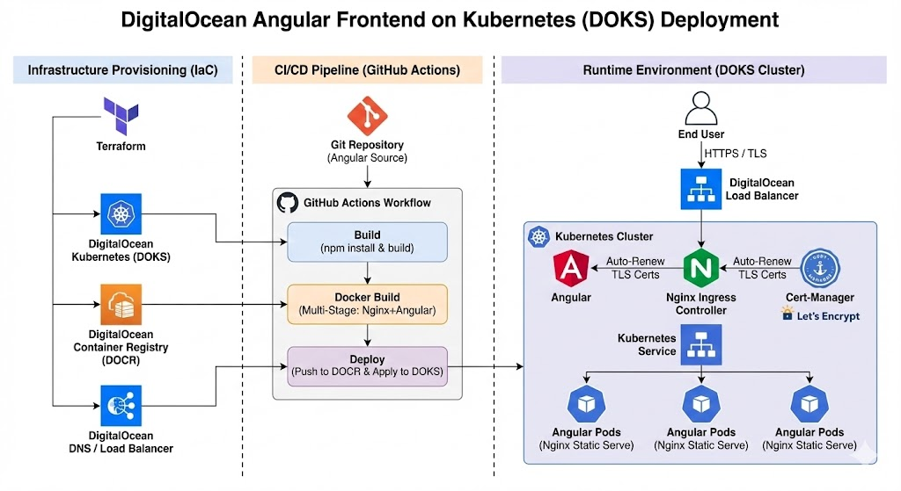
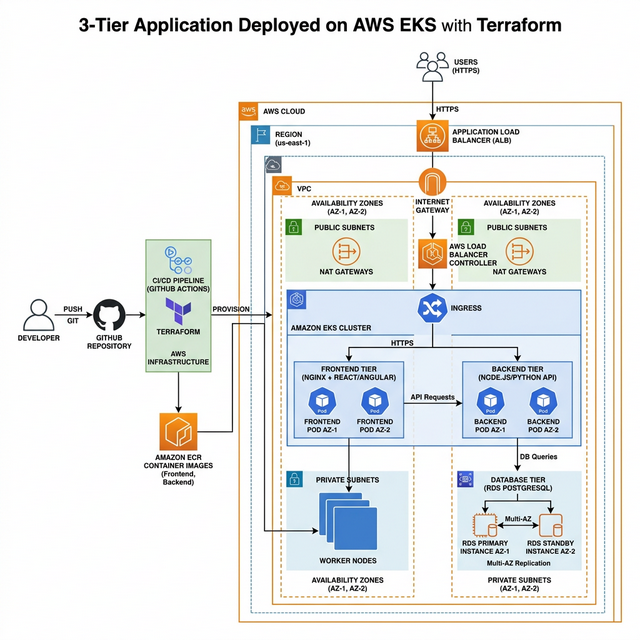
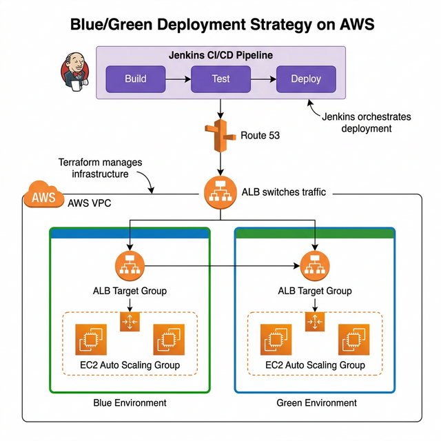

HashiCorp Certified: Terraform Associate (003) — Exam Guide (2025 Edition)
Terraform cheat sheet with key concepts, commands, best practices, and exam tips for the latest associate certification.
Read article →AWS Certified Solutions Architect and DevOps Engineer with 20+ years in IT and 5+ years on AWS, Kubernetes, Terraform, and CI/CD. I build production-ready platforms on AWS/GCP with GitOps, automation, and observability.
AWS Certified Solutions Architect and DevOps Engineer
I automate wherever possible, monitor everything, and keep infrastructure simple, secure, and reliable.
14+
CI/CD pipelines
8+
Kubernetes clusters
10+
Terraform stacks
About
Production-grade automation, observability, and secure delivery from test to prod.
Terraform and GitOps to build reliable, scalable, and secure cloud platforms
20+
Years IT Experience
5+
Years Cloud and K8s
10+
Terraform/GitOps stacks
40%
Faster Releases
I specialize in modernizing legacy systems and building production-grade cloud platforms. My approach combines AWS/GCP expertise, Kubernetes orchestration, and Terraform/GitOps-first delivery across 10+ stacks to create reliable, secure, and scalable infrastructure. I've standardized operations across 50+ servers, achieved 40% faster release cycles, and reduced downtime by 25% through automation and observability.
Deep hands-on experience with AWS (EC2, VPC, EKS/ECS, RDS, S3, CloudWatch) and GCP (GKE, Compute, Storage). Building scalable, cost-optimized architectures with high availability.
Kubernetes expert across EKS, GKE, AKS, and on-prem clusters. Docker/Compose, zero-downtime deployments, and production-grade container strategies.
Terraform, Ansible, AWS CDK for repeatable infrastructure. GitOps workflows with ArgoCD and Helm for automated, auditable deployments.
GitHub Actions, Jenkins, GitLab CI for automated build, test, and deploy. Security scanning, quality gates, and shift-left practices integrated into every pipeline.
Prometheus, Grafana, ELK stack for complete visibility. Alerting, capacity planning, and SLO-based monitoring for proactive operations.
IAM, VPC design, secrets management, policy as code. CEH-certified with security-first approach to infrastructure and application delivery.
Projects
Security-first DevSecOps platform for a Cyber Asset Attack Surface Management application on on-prem Kubernetes with GitOps-driven delivery and full observability.
Designed a security-first DevSecOps platform for a Cyber Asset Attack Surface Management (CAASM) application running on an on-prem Kubernetes cluster.
The platform automated the full delivery lifecycle using GitHub Actions for CI and ArgoCD for GitOps-based deployment, ensuring cluster state always matched Git configuration.
The application stack consisted of an Angular frontend and a Spring Boot backend, with PostgreSQL for transactional data and Elasticsearch powering large-scale search and analytics across cyber asset records.
A comprehensive CI pipeline was implemented using GitHub Actions to build, test, and secure application artifacts. Security and quality gates integrated directly into the pipeline:
This shift-left approach ensured that vulnerable builds were blocked before reaching the runtime environment.
Continuous delivery was implemented using ArgoCD and the GitOps model, enabling:
The application ran on an on-prem Kubernetes cluster behind an ingress controller. Authentication and identity management were handled through Keycloak using OIDC, providing centralized SSO for the platform.
Application performance and reliability were monitored using New Relic APM, allowing the team to track:
This significantly improved operational visibility and incident response capabilities.
Cloud-native DevOps platform modernizing a legacy EC2-based PHP Symfony infrastructure to AWS EKS with GitOps, ephemeral environments, and full observability.
Designed and implemented a cloud-native DevOps platform on AWS to modernize a legacy EC2-based PHP Symfony infrastructure.
The original architecture relied on EC2 auto-scaling groups, a single MySQL database, and AWS CodePipeline/CodeBuild. This setup caused high infrastructure costs and database bottlenecks during traffic spikes generated by periodic marketing campaigns (car lottery).
The platform was completely redesigned using Terraform-managed infrastructure, an EKS Kubernetes cluster, Jenkins CI with Kubernetes agent pods, ArgoCD GitOps deployments, and a comprehensive observability stack.
All infrastructure provisioned with Terraform, executed via Jenkins pipelines:
Ansible used for Jenkins configuration and cluster bootstrap operations.
CI — Jenkins with Groovy/DSL pipelines running on Kubernetes agent pods:
CD — ArgoCD (GitOps) with Helm charts:
When a developer opens a PR, Jenkins dynamically creates an isolated environment:
Production environment runs persistent infrastructure with destroy pipeline disabled — only DevOps team access.
Three-layer observability stack:
Velero for Kubernetes resource and persistent volume backups/DR.
MariaDB Operator deployed instead of RDS (client declined due to cost) — providing replication and high availability in-cluster. Redis used for query caching and session storage.
View architecture (JPG) → · View architecture (PNG) →
Architecture Overview
This platform demonstrates a production-grade DevOps architecture built on AWS EKS using Terraform, GitOps deployment with ArgoCD, and a secure CI pipeline powered by Jenkins and containerized build agents. The architecture supports ephemeral development environments, scalable microservices, and full-stack observability through Prometheus, Grafana, Fluentd, and New Relic.
Auto-Scaling Kubernetes Architecture for Breaking-News Traffic
Migrated a legacy EC2-based Laravel news platform to a scalable containerized architecture on AWS EKS with automated scaling, Redis caching, and Cloudflare CDN.
Modernized a high-traffic news platform that experiences unpredictable traffic spikes during breaking news events.
The original infrastructure relied on EC2 auto-scaling groups, a single MySQL database, CloudFront CDN, and AWS CodePipeline/CodeBuild/CodeDeploy. While it worked under normal conditions, it struggled during sudden traffic surges — leading to scaling delays, database bottlenecks, and high infrastructure costs.
The platform was redesigned using a containerized architecture on AWS EKS with Terraform, automated dual-layer scaling, Redis caching, Cloudflare CDN, and Prometheus/Grafana observability.
All infrastructure provisioned with Terraform:
Cloudflare provides CDN, DNS management, and DDoS protection. Media assets served from S3 through Cloudflare globally.
AWS-native CI/CD pipeline with Helm-based deployment:
Dual-layer auto-scaling for handling breaking-news traffic:
Redis reduces database pressure significantly during traffic spikes:
Prometheus collects container, node, scaling event, and resource utilization metrics.
Grafana dashboards visualize cluster health, application performance, and auto-scaling activity — enabling engineers to quickly identify bottlenecks during traffic spikes.
View architecture (JPG) → · View architecture (PNG) →
Architecture Overview
This platform demonstrates a high-availability architecture for a news portal built on AWS EKS. Users access the platform through Cloudflare CDN with S3-backed media delivery. The CI/CD pipeline flows through CodePipeline → CodeBuild → ECR → Helm upgrade → Rolling Deployment with readiness checks. The application runs as containerized Laravel services with Redis caching, dual-layer auto-scaling (HPA + Cluster Autoscaler), and full observability through Prometheus and Grafana.
Serverless Containers · Blue/Green Deployment · CloudWatch Observability
Designed a production-grade Django platform for a startup using ECS Fargate with blue/green deployment, WAF security, CloudWatch alerting, and operational runbooks.
Designed a production-grade Django platform for a fast-growing startup building a subscription-based digital content platform.
The startup needed to launch fast with minimal ops overhead — no server management, zero-downtime deployments, strong security, automated backups, and centralized alerting for a small engineering team.
ECS Fargate was chosen as the runtime because it eliminates EC2 management, patching, and cluster node overhead — making it ideal for a startup that needs to move quickly with a lean team.
All infrastructure provisioned with Terraform:
GitHub Actions-based CI/CD pipeline:
Zero-downtime deployment strategy for production safety:
"We used blue/green deployment on ECS to ensure zero-downtime releases and safer rollback during production updates."
CloudWatch monitors ECS task logs, ALB metrics, ECS CPU/memory, RDS CPU/connections/storage, and deployment events.
Alarm examples: ECS CPU high, task unhealthy, ALB 5xx errors, RDS CPU high, low free storage, deployment failure.
Alerting flow: CloudWatch Alarms → SNS → Slack + Email notifications. The team is instantly notified of scaling events, errors, and deployment issues.
Runbooks prepared:
Documentation: Architecture overview, environment variables, deployment workflow, incident escalation path, backup/restore notes, access/IAM guide.
View architecture (JPG) → · View architecture (PNG) →
Architecture Overview
This platform demonstrates a production-grade serverless architecture for a Django startup application on AWS ECS Fargate. Users are protected by AWS WAF at the edge, with traffic routed through ALB to Fargate containers running Django + Gunicorn. Blue/green deployment ensures zero-downtime releases through GitHub Actions CI/CD. Application secrets are managed via AWS Secrets Manager with task-level IAM roles. CloudWatch provides full observability with SNS alerting to Slack and email. Operational runbooks support incident response and platform maintenance.
GKE · Cloud Build · Cloud Deploy · Terraform · CloudSQL
Cloud-native e-commerce platform on GKE with automated CI/CD via Cloud Build and Cloud Deploy, CloudSQL database, Google CDN, and full observability.
Designed and deployed a production-grade e-commerce platform on Google Cloud for a growing online retail company experiencing rapid traffic growth during seasonal sales campaigns.
The platform needed to handle high-concurrency product browsing, real-time cart management, secure payment processing, and dynamic inventory updates — all while maintaining sub-second page load times.
The solution leverages Google Kubernetes Engine for containerized microservices, Cloud Build + Cloud Deploy for automated delivery pipelines with staging/production promotion, CloudSQL PostgreSQL for transactional data, Google Cloud CDN for global content delivery, and Cloud Trace + Cloud Monitoring for end-to-end observability.
All infrastructure provisioned with Terraform:
Google Cloud-native CI/CD with automated delivery pipeline:
Containerized microservices on Google Kubernetes Engine:
HPA scales pods based on CPU, memory, and request rate. Node auto-provisioning adds GKE nodes when needed during traffic spikes.
CloudSQL PostgreSQL — Primary database for:
HA configuration with automated backups, 7-day retention, and point-in-time recovery.
Memorystore for Redis — Used for:
Cloud Trace — Distributed tracing across microservices to identify latency bottlenecks in product search, checkout, and payment flows.
Cloud Monitoring — Dashboards for GKE pod health, request latency, error rates, CloudSQL connections, and Redis hit/miss ratios.
Cloud Logging — Centralized application and infrastructure logs with log-based metrics.
Alerting — Cloud Monitoring alerts → notification channels → Slack + Email for high error rates, latency spikes, pod crashes, and deployment failures.
View architecture (JPG) → · View architecture (PNG) →
Architecture Overview
This platform demonstrates a production-grade e-commerce architecture on Google Cloud. Users access the storefront through Google Cloud CDN backed by Cloud Storage for media assets, with traffic routed through Cloud Load Balancing with Cloud Armor WAF protection. Four containerized microservices run on GKE with HPA and node auto-provisioning. The CI/CD pipeline uses Cloud Build for automated testing and image creation, with Cloud Deploy managing staging → production promotion. CloudSQL PostgreSQL handles transactional data while Memorystore Redis provides session and cart caching. Cloud Trace, Cloud Monitoring, and Cloud Logging deliver full-stack observability with alerting to Slack and email.
Experience
From enterprise IT to cloud-native platforms
Freelance · İstanbul, Turkey
11/2023 – Present
Deliver cloud architecture, DevOps, and platform engineering for multiple clients across AWS and GCP, specializing in Kubernetes, IaC, CI/CD, and observability.
Impact & Deliverables
Tech Stack
AWS (EKS, EC2, RDS, ECS Fargate), GCP (GKE, Cloud Build, Cloud Deploy, Cloud SQL), Terraform, GitHub Actions, ArgoCD, Jenkins, Kubernetes, Prometheus, Grafana, ELK, Docker, Ansible
Oreon Development · Remote
01/2021 – 11/2023 | London, United Kingdom (Remote)
Led DevOps transformation, platform modernization, and Kubernetes-based delivery standardization for enterprise Java and cloud-native platforms.
Impact & Deliverables
Tech Stack
AWS, Kubernetes, GitHub Actions, GitLab CI, Jenkins, ArgoCD, Nexus, Keycloak, PostgreSQL, SonarQube, Trivy, Docker, Linux
Freelance · Istanbul, Turkey
01/2016 – 12/2020
Delivered cloud architecture, automation, and modernization projects for SaaS, cybersecurity, and enterprise IT clients.
Impact & Deliverables
Tech Stack
AWS, ECS, EKS, Terraform, Docker, Jenkins, Elasticsearch, Zabbix, Linux, Azure, VMware, PostgreSQL, MySQL, Cassandra
Feza A.Ş. · Istanbul, Turkey
02/1995 – 02/2016
Managed enterprise infrastructure across systems, networking, security, databases, and operations, while leading the transition from traditional environments toward virtualization and early cloud adoption.
Impact & Deliverables
Tech Stack
Windows Server, Active Directory, VMware, AWS, Rackspace, Oracle, PostgreSQL, MySQL, Jenkins, GitLab, ELK Stack, Linux, Cloudflare
Training and Labs

Workshop · Sep 30 – Oct 21, 2024
Comprehensive coverage from AWS VPC fundamentals to multi-VPC connections, secure access and file sharing methods, to high availability and Auto Scaling solutions. Four weeks of hands-on labs and real-world projects.

Workshop · May 21 – Jun 11, 2025
Learn CI/CD and GitOps concepts through real projects using GitHub Actions, Jenkins, and ArgoCD. Hands-on deployment scenarios for Python, Node.js, Django, and Java applications on AWS and GCP infrastructure.

Bootcamp · Aug 6 – Sep 28, 2024
Complete cloud journey covering AWS core services (EC2, S3, RDS, VPC), GCP/Azure/DigitalOcean fundamentals, Docker and Kubernetes container orchestration, and DevOps/CI/CD methodologies with hands-on projects.

Bootcamp · 12 Weeks · Middle Level · Zoom
Step-by-step, guided, industry-level projects delivered via Zoom-based live sessions for a small private group. An intensive 3-month hands-on bootcamp covering the complete DevOps lifecycle — from Linux and containerization to Kubernetes, CI/CD, GitOps, Terraform IaC, monitoring, and log management.

Capstone · DevOps Bootcamp
Designed and operated a highly available on-prem K8s platform with GitOps, centralized identity, and secure supply chain.

Capstone · DevOps Bootcamp
Modernized pipelines with Docker-in-Docker across GitLab CI and Jenkins; secure, isolated builds with integrated scanning.

Capstone · DevOps Bootcamp
Built an ELK-based platform with Beats + Logstash pipelines, optimized Elasticsearch ILM, and Kibana dashboards for real-time troubleshooting.

Capstone · DevOps Bootcamp
Migrated legacy PHP Laravel to AWS EC2/RDS with highly available architecture and automated GitHub Actions pipeline.

Capstone · DevOps Bootcamp
Terraform-provisioned DOKS + DOCR with GitHub Actions CI/CD, multi-stage builds, and secure ingress/TLS for Angular SPA delivery.

Capstone · DevOps Bootcamp
Deployed a production-grade 3-tier application (Frontend + Backend + Database) on AWS EKS, fully provisioned with Terraform. Multi-AZ high availability with ALB ingress and RDS PostgreSQL.

Capstone · DevOps Bootcamp
Implemented zero-downtime Blue/Green deployment strategy on AWS using Jenkins CI/CD pipelines and Terraform-managed infrastructure with ALB traffic switching.
Credentials and Education
Istanbul University
2009 – 2010
Ahmet Yesevi University
2004 – 2008
Erciyes University
1989 – 1992
Medium Articles
Read my latest articles on cloud architecture, Kubernetes, and DevOps best practices.
Terraform cheat sheet with key concepts, commands, best practices, and exam tips for the latest associate certification.
Read article →Production-ready AWS network with secure SSH access, outbound NAT, and public web tier fully codified in Terraform.
Read article →Secure on-prem to AWS connectivity with IPsec tunnels, routing, and validation steps for enterprise workloads.
Read article →Issue and renew free TLS certificates with Certbot on Amazon Linux, plus firewall and Nginx configuration.
Read article →Lock down database access by forwarding MySQL over SSH instead of exposing ports on the public internet.
Read article →Hands-on lab: design a secure VPC, add a bastion for SSH, run Apache in public subnet, validate NAT egress.
Read article →Peering fundamentals, route tables, and validation to securely link isolated AWS networks.
Read article →Hub-and-spoke TGW design to simplify routing, improve security, and scale multi-VPC connectivity.
Read article →React + MySQL app deployed on GKE with GitHub Actions builds and ArgoCD GitOps releases.
Read article →CI/CD pipeline pushes Flask container images to ECR and rolls out to ECS services with GitHub Actions.
Read article →End-to-end Jenkins pipeline to build, scan, and deploy Spring Petclinic onto an EKS cluster.
Read article →GitOps workflow deploying a Flask service to Kubernetes using ArgoCD for automated syncs.
Read article →Strategies and commands to snapshot Docker containers and images and restore them safely.
Read article →Let's Work Together
Available for freelance projects, consulting, and full-time opportunities. Let's discuss how I can help your team.